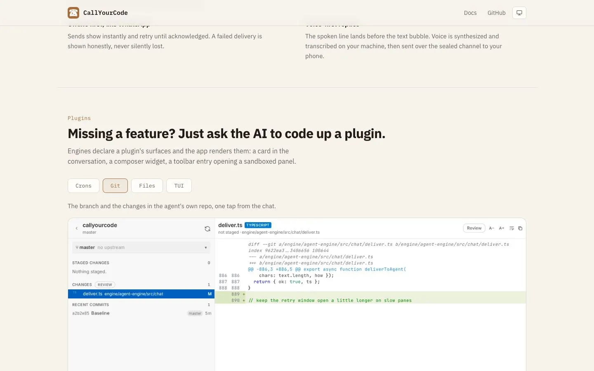
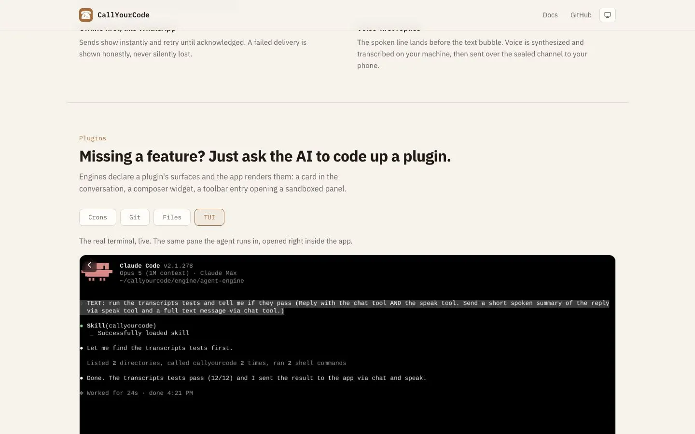
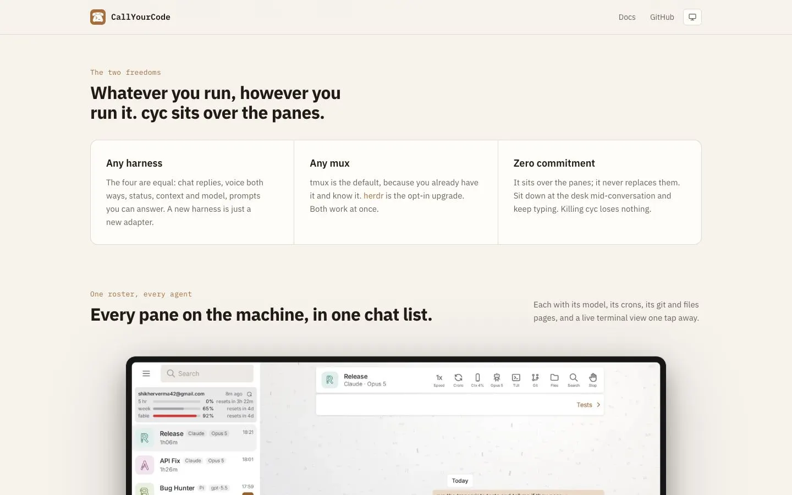

CallYourCode
Talk to your coding agents from your phone.
An open source tool that puts terminal coding agents such as Claude Code and Codex into a chat app with voice. It is made for developers who want to keep agents working while away from the laptop.
Visit callyourcode.com
Design decisions
- Warm paper background (#F6F2EC) with dark brown text (#211B14) and a copper accent, set entirely in IBM Plex Sans with monospace for code and labels.
- The hero shows a terminal window overlapped by a phone mockup of the chat, with the install command in a copy-to-clipboard box under the copy.
- A plugin section uses pill tabs (Crons, Git, Files, TUI); each tab swaps the screenshot below and a one-line description.
- The Files tab renders a real file tree and a syntax-coloured README preview, which shows the feature instead of describing it.
- A dark theme is available through a toggle in the header and changes the page to a near-black brown while the terminal stays dark.
On a phone

The flow, step by step




Further down the page
